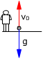
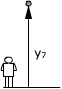
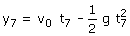
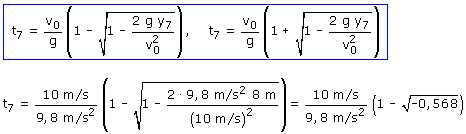

g)
Ecuaciones del movimiento:
|  |
|
Parámetros: v0 = 10 m/s, g = 9.8 m/s2 |

Aplicación: Datos: y7 = 8 m, Incógnitas: t7
|  |
 |

Un valor imaginario del tiempo significa que no puede darse la situación planteada, la piedra nunca estará 8 m por encima del punto de partida (Obvio, la altura máxima es 5.10 m)